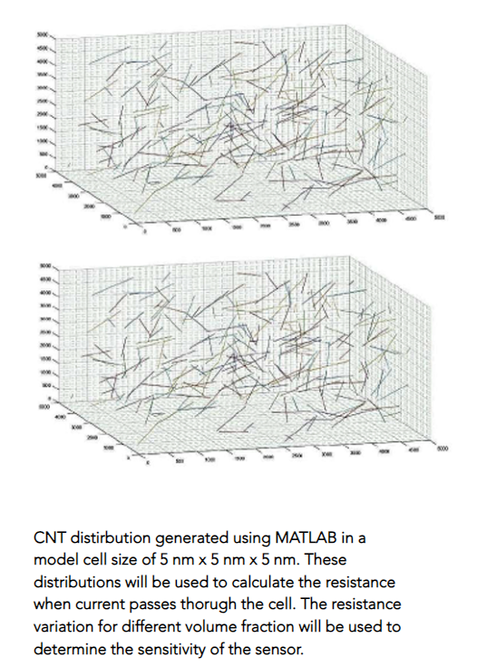

In this work, the numerical results for free vibration response of porous functionally graded circular plate are calculated using differential quadrature method. The displacement field is based on first-order shear deformation theory with five unknown variables. The Hamilton principle is used for finding the general governing differential equation of the model. The effective material properties of porous FGM plate are obtained by modified power law. By solving the eigenvalue problems using MATLAB the effect of grading index, boundary conditions, porosity index and porosity distributions on the vibration response has been analyzed. Find the complete report here.
In this paper, new tangent shape function-based higher-order transverse shear deformation theory (NTHSDT) is proposed to compute the buckling behavior of the elastically supported functionally graded material (FGM) sandwich plates under porous medium. The proposed theory is found to be variationally consistent and fulfills the zero traction boundary conditions on the bottom and top layer without a shear correction factor.

It has been theoretically and experimentally confirmed that the electrical conductivity of CNT-based composites depends on many factors such as nanotube type - single-walled nanotube (SWNT) or multi-walled nanotube (MWNT) ,nanotube length, nanotube waviness, contact resistance between nanotubes among others. In parametric studies where many combinations of several factors must be considered, it is important to develop a simple and efficient analytical model that predicts how the micro/nanoscale influences the macroscale properties and extract useful information for optimizing the composite performance.